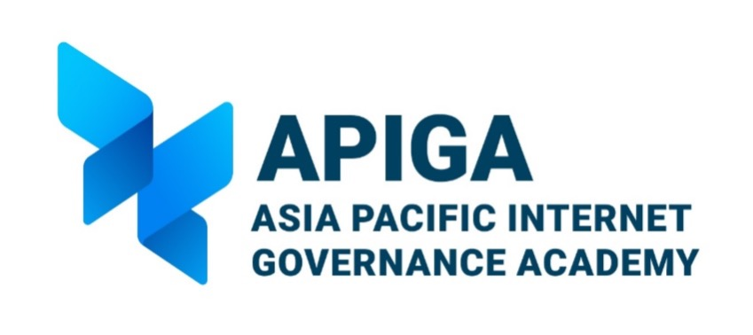

Safer Internet Day India 2026
APIGA India is honored to serve as the coordinator for Safer Internet Day India.
About APIGA
The Asia Pacific Internet Governance Academy (APIGA) is a prestigious capacity development workshop conducted by Internet Corporation for Assigned Names and Numbers (ICANN) in partnership with Korea Internet Security Agency (KISA) aimed at nurturing understanding and engagement with critical Internet governance issues, particularly within the Asia Pacific (APAC) region. In continuation of this regional APIGA initiative, the Local APIGA India 2026 will provide a unique opportunity for tertiary undergraduate and graduate students in India to delve into the intricacies of Internet governance, ICANN policies, and the multistakeholder model.

APIGA India 2026
APIGA India 2026 is a two-day capacity development workshop focused on Internet governance-related topics to be held on 26-27 February 2026 at JGU International Academy, Taj Mahal Hotel, New Delhi. This localized version brings together stakeholders from the Internet Governance ecosystem to discuss, share knowledge, and build capacity.
Through dynamic workshops, real-world simulations, and expert-led sessions, you'll gain practical insights into:
- The evolving landscape of Internet policy
- Critical issues in digital rights and cybersecurity
- Multi-stakeholder approach to Internet Governance
- Youth representation in policy and advocacy
OBJECTIVES
Enhanced Youth Representation
Foster active involvement of youth in Internet governance policy discussions and ICANN remit areas.
Multistakeholder Analysis
Encourage critical analysis of ICANN policy issues from diverse stakeholder perspectives.
Policy Engagement
Empower participants to contribute meaningfully to current ICANN policy development processes.
About ICANN
The Internet Corporation for Assigned Names and Numbers is a global multi-stakeholder group and nonprofit organization headquartered in the United States responsible for coordinating the maintenance and procedures of several databases related to the namespaces and numerical spaces of the Internet, ensuring the Internet's stable and secure operation.
ICANN's primary principles of operation have been described as helping preserve the operational stability of the Internet; promoting competition; achieving broad representation of the global Internet community; and developing policies appropriate to its mission through bottom-up, consensus-based processes.
The Multi-Stakeholder Model of Internet Governance
Internet governance refers to the rules, policies, standards and practices that coordinate and shape global cyberspace. The Internet is a vast network of independently-managed networks, woven together by globally standardized data communication protocols.
Internet governance is the development and application of shared principles, norms, rules, decision-making procedures and programs that shape the evolution and use of the Internet.
Workshop Format
- ICANN Model Conference
- Multi-stakeholder Role-Play
- Roundtable Discussions
- Guest Speakers
- Interactive Modules
Time Allocation
The workshop runs for two full days, from 09:00 AM to 5:45 PM each day (8.45 Hours/Day). Sessions include stakeholder roundtable discussions, DNS and IDNs, simulation games, and collaborative decision-making exercises.
Key Benefits
Expert Sessions
Interactive learning with industry experts and Internet governance leaders
ICANN Model Conference
Participate in simulated policy development processes and multi-stakeholder discussions
Certification
Receive recognition for completing the comprehensive Internet governance program
Testimonials
APIGA India is a community-level initiative, and much of what it does is carried forward by the people who take part in it. Below, some of them describe what the programme involved and where it led.
Pali Pranjal
APIGA India 2026
“APIGA India was where my Internet governance journey really began.”
Read full testimonialAnika
APIGA India 2025
“You do not need a technical or policy background to belong here. I came in from compliance, and all it asked of me was curiosity.”
Read full testimonialChirag
APIGA India 2025
“APIGA made me realise that young people should not remain passive users of the Internet. We have a voice, a responsibility and an opportunity.”
Read full testimonialAPIGA India 2026 Participants Selected!
Applications are now closed. Meet the 31 selected participants from across India who will be joining us for the 2-day workshop on Internet governance.
Eligibility Criteria
Requirements
- Age: 18-35 years
- Must be an Indian Citizen
- Available to travel to Delhi for the 2-day event
- Commit to attend introductory sessions and complete mandatory preparatory courses (approx. 2-3 hours/week)
Preferred Background
- Technology
- Law
- Public Policy
What to Expect
Expert Insights
Learn from leading professionals in Internet governance and policy-making.
Interactive Sessions
Engage in hands-on workshops and collaborative learning experiences.
ICANN Model Conference
Experience policy-making through simulation of ICANN processes.